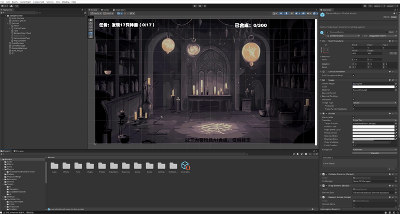

👋您好，我是李鹏程的AI智能助手！
我可以帮助你快速了解李鹏程同学在游戏设计、AI 产品、跨平台项目中的专业能力与项目成果。
李鹏程曾在祖龙娱乐、展心展力、文脉互动等公司担任核心岗位，主导 UGC 平台、AI 场景落地与商业化方向的项目研发。你可以在这里深入了解他的：
🕹 独立项目：AI 合成游戏、AI 智能助手等
🏢 企业项目：祖龙娱乐 Q&A 系统、AI 游戏内容搭建等
🎓 能力标签：AI 产品策划、系统逻辑设计、项目协作管理
欢迎来到李鹏程的个人作品网站
你可以咨询我的AI智能助手，询问有关我的问题，以及查看我参与过的游戏开发和相关的 AI 项目。
李鹏程的 AI 智能助手
🧠 AI合成游戏 | AI Synthesis Game
一款结合大语言模型与图像生成能力的创意合成探索游戏
🎮 项目简介
类《Infinite Craft》玩法，通过拖动和合成基础元素（金、木、水、火、土）不断解锁新元素。 融合本地大模型（Ollama）与图像生成（Stable Diffusion）能力，玩家可探索合成路径并最终发现神兽类元素。
🔧 我负责的内容
- 玩法系统设计：策划元素合成规则、神兽设定与探索流程
- Unity开发实现：实现拖拽、碰撞检测、元素生成、合成历史等核心功能
- AI模型集成：调用本地 Ollama 实现合成逻辑，接入 Stable Diffusion 生成神兽图像
- UI与成就系统：设计成就解锁弹窗、背景切换与历史复用机制
✨ 技术亮点
- ✅ 本地部署大语言模型（Ollama）驱动元素合成逻辑
- 🎨 Stable Diffusion 实时生成神兽图像并自动替换背景
- 🧩 模块化元素系统，支持拖拽、复制与扩展
- 📜 合成历史可复用，提升探索与策略体验
- 🏆 神兽成就系统带有进度记录与动态提示弹窗
🎥 项目展示

💡 技术栈
Unity · C# · Ollama · LLM（Llama3） · Stable Diffusion（绘世SD） · JSON API
祖龙娱乐 - AI智能助手《诺玛》
为个人网站量身打造的求职智能助理，结合本地大模型和交互体验设计
🧠 项目定位
“诺玛”是一位用于个人求职网站的 AI 助手，可主动引导访客了解项目经验、技能优势并支持智能问答。 它不仅提升了用户停留时长，也极大优化了访客对项目内容的获取效率。
🔧 我的职责
- 功能与人设策划：定义交互目标、对话风格、回应逻辑结构
- 技术集成与部署：使用 Flowise 和 Koozai 嵌入模型助手到网页中
- Prompt调优与知识库构建：整理个人资料、项目文档并配置知识语料
- 前端接入优化：实现浮窗弹出、语音识别、移动端适配与交互细节
✨ 技术亮点
- 📚 自建RAG知识库，支持文档问答与语义理解
- 🛠️ Flowise + KoozAI 本地组合方案，高效快速集成
- 🎭 支持“助手人格”设定，语气逻辑统一
- 📱 全平台兼容，移动端适配浮窗体验
🖼️ 项目展示

💡 技术栈
Flowise · KoozAI · LLM（DeepSeek） · HTML/JS · 自定义Prompt · RAG语料管理
展心展力 - UGC创作平台 《口袋方舟》
面向青少年的3D创作工具平台，支持地图编辑、捏脸定制、互动玩法搭建与社区分享
🚀 项目简介
口袋方舟是一款移动端UGC平台，帮助用户低门槛进行3D地图、角色外观与互动内容创作。 平台融合“创作-试玩-分享”闭环体验，支持个性角色定制与玩法逻辑编辑，打造轻量级创作社区。
👨💻 我的职责
- 策划平台创作核心模块，如地图编辑器、逻辑玩法与内容发布机制
- 主导玩家“捏脸系统”设计，实现五官调节、发型装饰与角色外观定制
- 提出并优化“拼图式组件”和“逻辑积木”交互流程
- 与客户端、美术、引擎团队协作推进创作工具上线与性能调优
✨ 项目亮点
- 🧍♂️ 全功能捏脸系统：支持五官微调、发型换装、肤色设定、饰品搭配
- 📱 移动端地图拼图编辑，适配触控交互与实时预览
- 🔧 零代码逻辑积木，支持玩家定义事件触发与玩法逻辑
- 🌐 支持UGC作品发布与在线游玩，构建青少年创作生态
🖼️ 项目展示


🛠️ 技术栈
UE4 · C# · 可视化逻辑系统 · 模块化组件架构 · UGC内容存储与同步
🐉 文脉互动 · 中重度手游项目
代表项目：《圣龙传奇》《屠龙战记》 · RPG成长 + 商业化系统策划
👨💼 我的职责
- 参与多个MMORPG游戏的玩法系统、商业化模块设计与版本迭代
- 主导成长线、活动系统、VIP机制与付费内容的规划与调优
- 协同程序与美术推进功能开发，撰写策划文档与资源配置
- 跟进数据反馈，基于运营数据持续优化留存与付费表现
✨ 项目成果
- 📈《圣龙传奇》上线后日流水破百万，参与多个核心系统打磨
- 🎯 策划“军团试炼”等特色玩法，提升中期用户活跃
- 🛒 优化VIP成长与礼包系统，推动ARPU与留存增长
- 📊 融合问卷与数据分析，输出用户分层及差异化运营建议
🖼️ 项目展示
🛠️ 参与模块
成长线设计 · 系统活动 · 商业化策划 · 数据分析 · 玩法创新
🙋♂️ 关于我
我是李鹏程，一名拥有 9年互联网与游戏产品领域经验 的资深产品人，曾在 233乐园、祖龙娱乐等知名游戏公司担任 AI 产品经理、系统策划、平台产品等多个核心岗位，深度参与并主导多个复杂项目从0到1落地上线。
在职业生涯中，我累计参与了多个跨平台项目的完整生命周期，包括：
- AI 问答助手
- AI+游戏内容生成场景探索项目
- BI数据分析平台
- UGC创作平台（如捏脸编辑器、地图编辑器等）
我善于将 AI 技术与游戏开发流程融合，推动大模型、智能工具在 美术、策划、测试等生产环节落地，提升整体协作效率。熟悉 RAG、Prompt工程、微调、Agent 等大模型技术体系，并持续关注前沿动向。
具备良好的 技术背景，熟悉 UE4 与 Unity 引擎，可独立完成角色系统、UI、摄像机等模块功能的原型设计与验收测试。擅长使用 Java 进行逻辑验证、Python 进行数据分析与工具开发，具备独立搭建小型产品与 DEMO 能力。
此外，我具备扎实的产品设计与文档能力，熟练使用 Axure、Figma、Xmind、Visio 等工具，能够高效输出交互原型、流程图与高质量 PRD，具备出色的跨团队沟通与项目协同能力，能从全局出发推进复杂项目高效落地。
我坚信“AI是下一个生产力革命”，希望以产品人的视角，持续探索 AI 与创作工具、内容平台、游戏生产流程的融合落地路径。
学历背景：长春大学-园林设计专业-本科
📬 联系方式
欢迎联系我，获取更多合作或简历信息：
- 姓名： 李鹏程
- 邮箱： 916646318@qq.com
- 微信： jklf007（可备注来意）
- GitHub： github.com/dasqwd
- 所在地： 北京 / 可远程办公